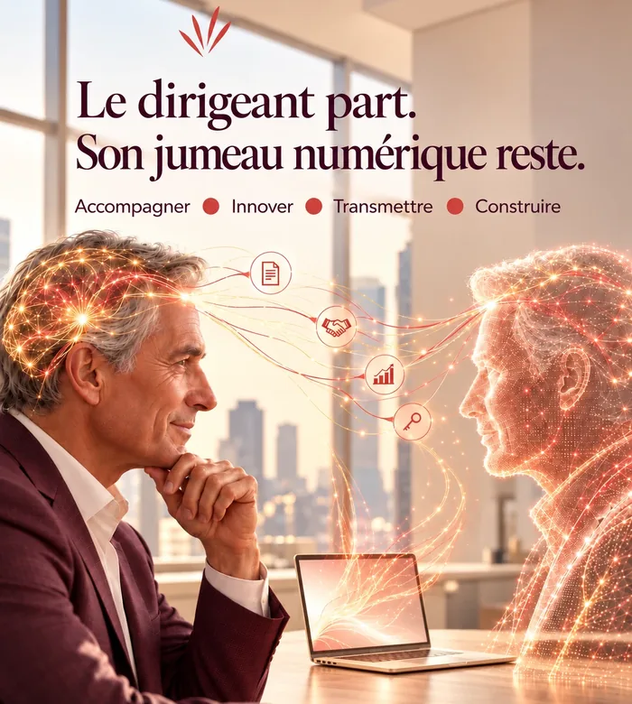

Quand le dirigeant part,
comment garder son savoir ?
 Article développé à partir de ma publication LinkedIn ()
Article développé à partir de ma publication LinkedIn ()
Version courte →
Dirigeants de PME : d’ici dix ans, environ 550 000 chefs d’entreprise partiront à la retraite en France.
On prépare le prix, le repreneur, la fiscalité. Rarement le savoir : pourquoi ce client reste, pourquoi ce fournisseur, ce qui a déjà échoué.
Un assistant IA nourri d’entretiens avec le dirigeant peut garder cette mémoire, à condition que le dirigeant valide tout ce qui est transmis.

Vous dirigez une PME et votre départ se prépare, dans trois ans ou dans dix ?
Votre savoir ne figure dans aucun acte de cession.
Cet article vous aide à le garder dans l’entreprise, avec l’IA et sous votre contrôle.
🎯 Qu’est-ce qu’un jumeau numérique du dirigeant ?
C’est un assistant IA qui répond aux questions à partir de ce que le dirigeant a dit, écrit et décidé. Il ne remplace pas le dirigeant. Il garde la trace de son raisonnement, pour ceux qui reprennent.
Le terme vient de l’industrie, où l’on crée une copie numérique d’une machine pour la suivre à distance. Appliqué à un dirigeant, il désigne une mémoire que l’on peut interroger.
Ce qu’a fait Frédéric Mazzella
Le fondateur de BlaBlaCar a lancé en juillet 2026 Fred24, un assistant IA nourri de vingt ans de ses conférences, interviews et écrits. Les entrepreneurs lui posent leurs questions ; l’assistant répond à partir de ce que Frédéric Mazzella a déjà dit et écrit.
Son public est large : les créateurs d’entreprise. La même idée peut servir à l’intérieur d’une PME, pour un cercle restreint : le successeur, le comité de direction, les cadres clés.
Les chiffres qui rendent le sujet urgent
Selon le ministère de l’Économie, environ 550 000 chefs d’entreprise partiront à la retraite dans les dix ans, avec 3 millions d’emplois en jeu. Le plan « Objectif Reprises », présenté le 23 avril 2026, vise à faciliter ces transmissions.
Le savoir, grand oublié des cessions
L’enquête « Great Insights 2026 » de Great Place To Work et Toluna (4 246 actifs) le confirme : 44 % des salariés identifient des collègues dont le départ ferait perdre un savoir important. Seuls 40 % voient leur entreprise organiser cette transmission.
Un dirigeant concentre ce risque. Il sait pourquoi tel client reste fidèle, pourquoi tel fournisseur a été choisi, ce qui a déjà été essayé et a échoué. Rien de tout cela ne figure dans les comptes.
🎯 La méthode en quatre temps, tant que le dirigeant est là :
enregistrer des entretiens courts avec lui, sur ses grandes décisions ;
les faire transcrire et classer par thème ;
donner au successeur un assistant qui répond à partir de ces notes, en citant ses sources ;
laisser le dirigeant relire et valider tout ce qui est transmis.
Dans mon entourage, deux dirigeants sont en plein dedans : l’un part à la retraite dans trois ans, l’autre vend sa société. C’est le bon moment pour eux : ils sont encore là pour raconter, corriger et transmettre.
💬 Dans votre entreprise,
qui sait aujourd’hui ce que sait votre dirigeant ?
Sources : Bpifrance Big Média, entretien avec Frédéric Mazzella sur Fred24, 15 juillet 2026 ; ministère de l’Économie, plan « Objectif Reprises », avril 2026 ; Great Place To Work et Toluna, enquête « Great Insights 2026 » ; Banque des Territoires, projet de « pacte Papin » ; règlement (UE) 2024/1689 (AI Act), article 50 ; RGPD.
Lire l’article completenviron 1 700 mots
Pourquoi le savoir d’un dirigeant se perd
Une grande part des décisions d’un dirigeant ne laisse aucune trace écrite. Elles se prennent au téléphone, en fin de réunion, entre deux portes. Le compte rendu garde la décision ; il perd presque toujours le raisonnement.
Le reste vit dans sa mémoire : l’historique d’une relation client, la raison d’un prix, l’engagement pris un jour envers un partenaire. Quand le dirigeant part, son successeur hérite des contrats sans le contexte qui les explique.
Ce qu’un jumeau numérique sait faire
Bien construit, il rend trois services :
retrouver en quelques secondes une information enfouie dans des années de notes ;
expliquer le pourquoi d’une décision passée, avec la source qui l’atteste ;
dire qu’il ne sait pas, quand la question sort de ce qu’on lui a confié.
Le troisième service compte le plus. Un assistant qui invente une réponse plausible ferait plus de dégâts qu’un silence.
Ce qu’il ne sait pas faire
Il ne décide pas. Il ne connaît que ce qu’on lui a donné, à la date où on le lui a donné. Il ne remplace ni la passation entre deux personnes, ni les rencontres avec les clients clés, ni le temps qu’il faut à un successeur pour gagner la confiance des équipes.
Il ne capte pas non plus l’intuition. Un dirigeant peut expliquer pourquoi il a dit non à un partenaire ; il ne transmet pas la sensation qui l’a alerté. L’assistant garde l’explication, pas le flair.
Les entretiens, matière première du jumeau
Quelques entretiens d’une heure, bien préparés, valent mieux qu’une longue série improvisée. Cinq thèmes reviennent dans la plupart des PME :
les clients historiques, et ce qui les retient ;
les fournisseurs et partenaires, et les raisons de ces choix ;
les décisions difficiles, et ce qu’elles ont appris ;
les erreurs passées, à ne pas refaire ;
les règles non écrites de la maison.
Les meilleures questions partent d’un récit : « racontez-moi la dernière fois que vous avez refusé un client ». Un récit porte le raisonnement qu’une fiche de poste efface.
Cinq questions pour ouvrir un entretien :
« Racontez-moi le client que vous avez eu le plus de mal à garder. »
« Quelle décision prendriez-vous autrement aujourd’hui ? »
« Quel fournisseur ne faut-il jamais lâcher, et pourquoi ? »
« Quelle règle de la maison n’est écrite nulle part ? »
« Que doit savoir votre successeur dès le premier mois ? »
Les documents à rassembler en parallèle
Les entretiens donnent le raisonnement. Quelques documents donnent les faits :
les comptes rendus des comités de direction des dernières années ;
les contrats clés, avec une note du dirigeant sur ce qui a été négocié et pourquoi ;
l’historique des prix et des remises accordées aux grands clients ;
l’organigramme réel, celui qui dit qui décide vraiment ;
le carnet d’adresses commenté : qui appeler, pour quoi, et ce qu’il faut savoir avant.
Ces documents nourrissent l’assistant au même titre que les entretiens. Ils passent par la même relecture : le dirigeant retire ce qui n’a pas à circuler.
Comment fonctionne l’assistant
On parle de génération augmentée par la recherche. L’assistant ne « sait » rien par lui-même : à chaque question, il cherche les passages utiles dans les notes du dirigeant, puis rédige sa réponse à partir de ces seuls passages, en les citant.
Pour le successeur, la citation fait toute la différence. Il voit d’où vient la réponse, relit l’entretien d’origine et juge par lui-même.
Une question, de bout en bout
Prenons une question type du successeur : « Pourquoi travaillons-nous encore avec ce transporteur, alors qu’un concurrent est moins cher ? »
L’assistant cherche dans les entretiens. Il retrouve le passage où le dirigeant raconte une livraison sauvée un soir de crise, et l’engagement de fidélité pris ensuite. Il répond en deux phrases et indique l’entretien d’origine, avec sa date.
Si aucun entretien n’aborde le sujet, il le dit. Le successeur sait alors qu’il doit poser la question au dirigeant, tant qu’il est encore là. Ce silence a de la valeur : il montre ce qui manque à la mémoire.
Le dirigeant reste l’éditeur de sa mémoire
Rien n’entre dans l’assistant sans sa validation. Il relit les transcriptions, retire ce qu’il ne veut pas transmettre, corrige ce qui a été mal compris.
Cette étape rassure aussi ceux qui hésitent à se livrer. On parle plus librement quand on sait qu’on relira tout.
Qui pilote le projet
Le dirigeant donne la matière. Il ne peut pas tout porter seul : il dirige encore l’entreprise.
Quatre rôles suffisent dans une PME :
le dirigeant, qui raconte, relit et valide ;
le successeur, qui pose les questions et teste l’assistant ;
un pilote interne, souvent l’assistante ou l’assistant de direction, qui planifie les entretiens et suit les relectures ;
le responsable informatique ou un prestataire, pour l’outil, les accès et la sécurité.
Le pilote interne connaît l’agenda et les dossiers du dirigeant. C’est aussi la personne qui sait obtenir une heure dans une semaine déjà pleine.
Ce que dit le droit
Les entretiens enregistrés sont des données personnelles : la voix du dirigeant, ses opinions, parfois des noms de clients ou de salariés. Le RGPD s’applique : informer, recueillir l’accord du dirigeant, limiter la durée de conservation, protéger l’accès.
Les personnes citées dans les entretiens ont aussi des droits. La règle la plus simple : anonymiser les noms de clients et de salariés avant d’alimenter l’assistant, sauf nécessité réelle.
Côté IA Act, un assistant interne de ce type ne relève pas des systèmes à haut risque, tant qu’il ne sert pas à évaluer ou à gérer des salariés. La règle de transparence en vigueur depuis le 2 août 2026 se respecte sans effort : chacun sait qu’il interroge une IA.
Où conserver cette mémoire
Ce savoir est stratégique. Il n’a rien à faire dans un outil grand public susceptible de s’en servir pour entraîner ses modèles. Choisissez une offre professionnelle qui l’exclut par contrat, hébergée de préférence en Europe, avec des accès nominatifs.
Posez aussi la question de la propriété : en cas de cession, le jumeau numérique fait-il partie de ce qui est vendu ? Mieux vaut l’écrire dans le protocole de cession que le découvrir après la signature.
Ce que le repreneur y gagne
Un repreneur achète des comptes, des contrats et des équipes. Il achète aussi un risque : celui de ne pas comprendre ce qui fait tenir l’ensemble.
Une mémoire documentée réduit ce risque. Elle montre pourquoi les clients restent, comment les prix ont été fixés, quelles décisions ont échoué. Elle rassure l’acquéreur et facilite les premiers mois, quand chaque départ d’un client clé coûte cher.
Elle se prépare comme le reste du dossier de cession : qui y a accès, ce qu’elle contient, ce qui en a été retiré.
Vérifier que ça marche
Avant de compter sur l’assistant, testez-le :
préparez vingt questions réelles, posées par le successeur et par deux cadres ;
vérifiez que chaque réponse cite un entretien, et que la citation dit bien ce que l’assistant affirme ;
notez les questions sans réponse : ce sont les entretiens à mener en priorité ;
refaites le test chaque trimestre, avec de nouvelles questions.
Un assistant qui répond juste à dix-huit questions sur vingt, et qui reconnaît ne pas savoir pour les deux autres, est prêt à servir. Un assistant qui répond à tout ne l’est pas.
Les erreurs à éviter
Cinq erreurs reviennent souvent :
tout enregistrer sans trier, et noyer l’essentiel ;
choisir un outil grand public pour aller plus vite ;
sauter la relecture du dirigeant ;
confondre une archive de documents avec un assistant qui répond ;
commencer trois mois avant la cession.
La dernière est la plus fréquente. Elle ne se corrige qu’en commençant plus tôt.
Le bon moment pour commencer
Plusieurs années avant le départ, le dirigeant a encore la disponibilité et le recul pour raconter. À quelques mois de la cession, l’urgence prend toute la place : négociation, audits, annonce aux équipes.
Le « pacte Papin », inscrit au projet de loi de finances 2027 pour les cessions de 2027 à 2029, doit encore être voté. S’il l’est, il accélérera les transmissions. Le savoir, lui, ne se rattrape pas en quelques semaines.
Trois signaux qu’il est temps de commencer
N’attendez pas une date de départ pour lancer la démarche :
le dirigeant est le seul à pouvoir répondre à certaines questions de clients ;
un projet de cession, de transmission familiale ou d’ouverture du capital est évoqué, même de loin ;
les équipes disent « il faut demander au patron » plusieurs fois par semaine.
Un seul de ces signaux suffit. Chacun montre qu’une partie de la valeur de l’entreprise tient dans une seule tête.
Et après le départ
La mémoire ne s’arrête pas le jour du départ. Les premiers mois, le successeur l’interroge souvent. Puis les questions changent : l’entreprise évolue, de nouvelles décisions s’ajoutent.
Décidez à l’avance qui la tient à jour, qui y accède et combien de temps elle est conservée. Le dirigeant parti peut accepter d’être recontacté pour combler un manque, sur une période fixée ensemble. Écrivez-le, comme le reste.
À terme, la mémoire du dirigeant devient celle de l’entreprise. C’est le vrai but : que le savoir appartienne à la maison, et plus à une seule personne.
Un projet à taille humaine
Pas besoin d’un grand chantier informatique. Dix entretiens d’une heure, autant de relectures et quelques semaines de mise en place suffisent pour une première version.
Le plus difficile n’est pas l’outil. C’est de bloquer, dans l’agenda du dirigeant, une heure par semaine pour raconter. La réussite du projet se joue là.
Ce que je conseille à un dirigeant
Une démarche en cinq étapes, sans grand budget :
lister les dix décisions qui ont le plus façonné l’entreprise ;
consacrer à chacune un entretien d’une heure, enregistré avec son accord ;
faire relire et corriger chaque transcription par le dirigeant ;
tester l’assistant avec le futur successeur, sur des questions réelles ;
enrichir la mémoire chaque trimestre, jusqu’au départ.
Garder le savoir d’un dirigeant relève de la gouvernance plus que de l’informatique. Cette mémoire protège la valeur de l’entreprise autant que son prix.
L’IA peut garder la mémoire d’un dirigeant. Le choix de ce qui mérite d’être transmis reste le sien.